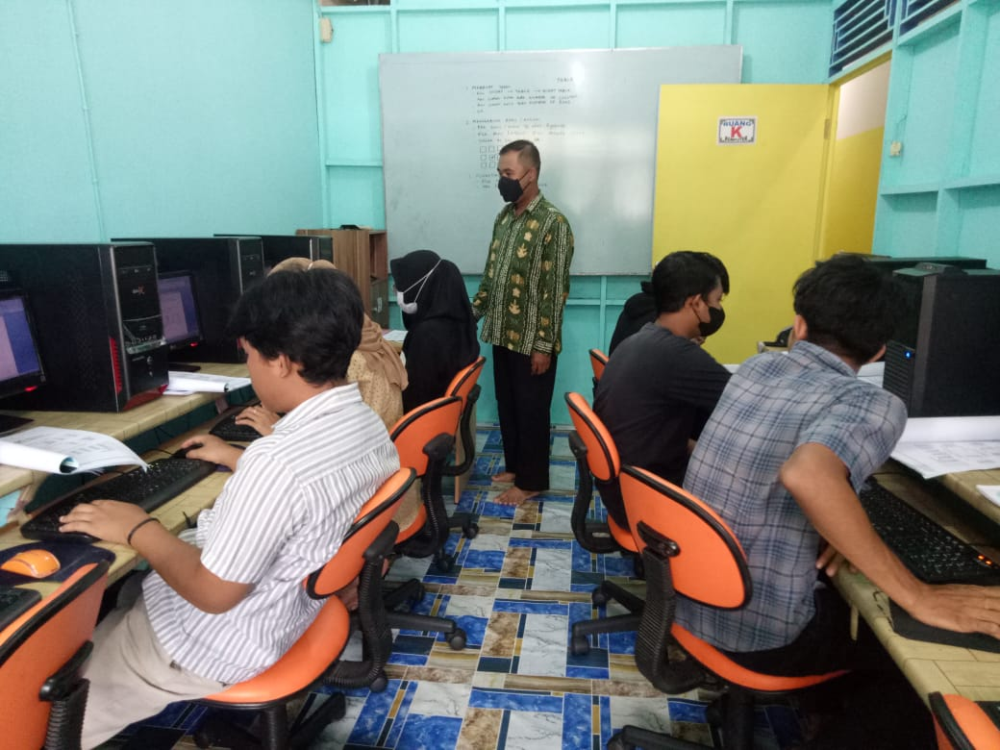
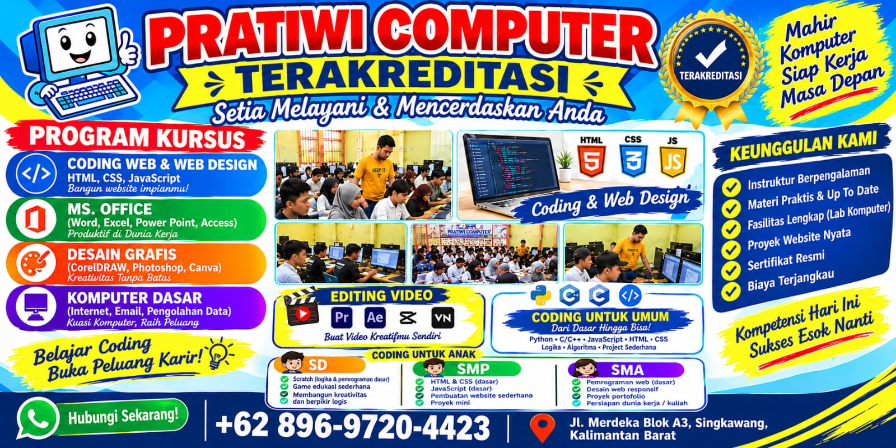
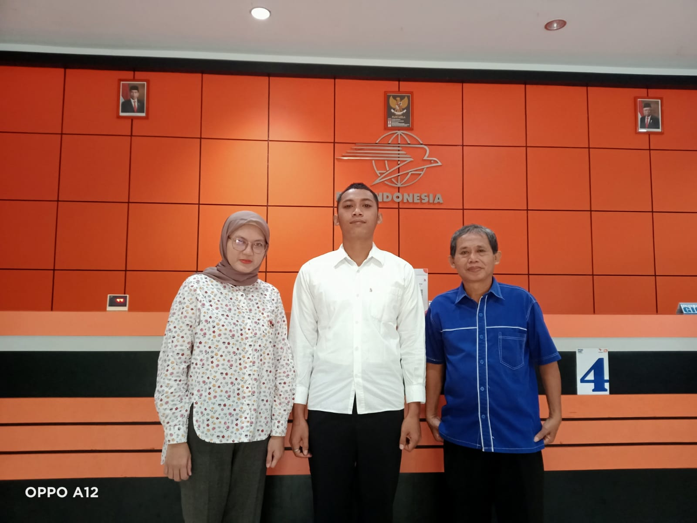
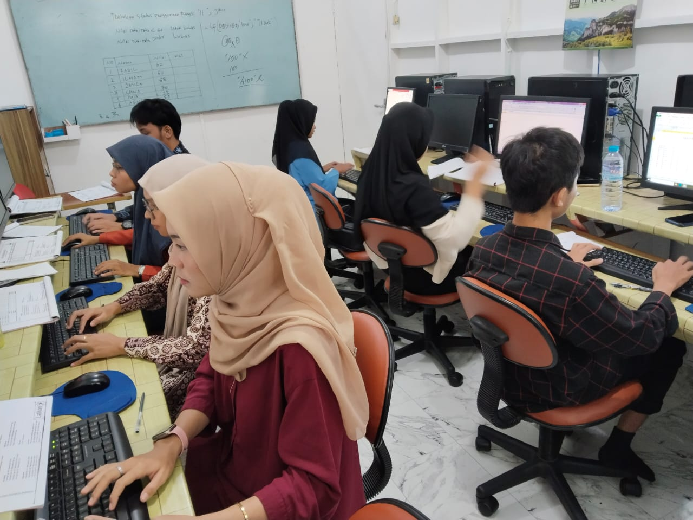
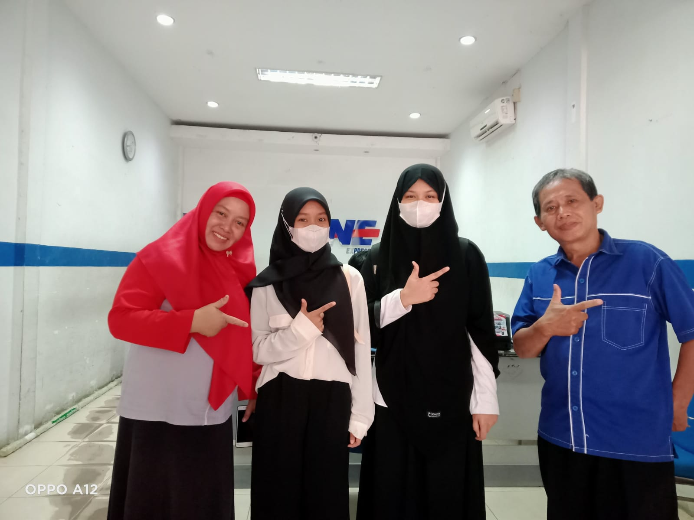
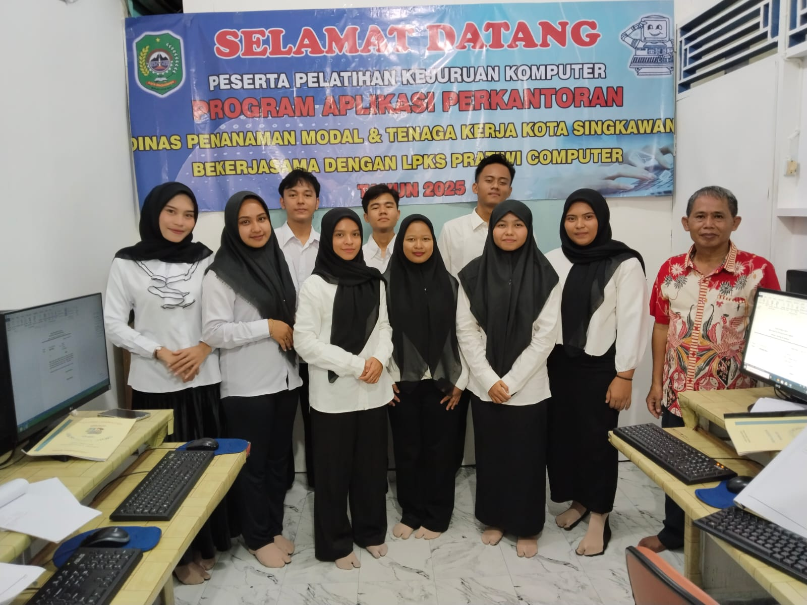
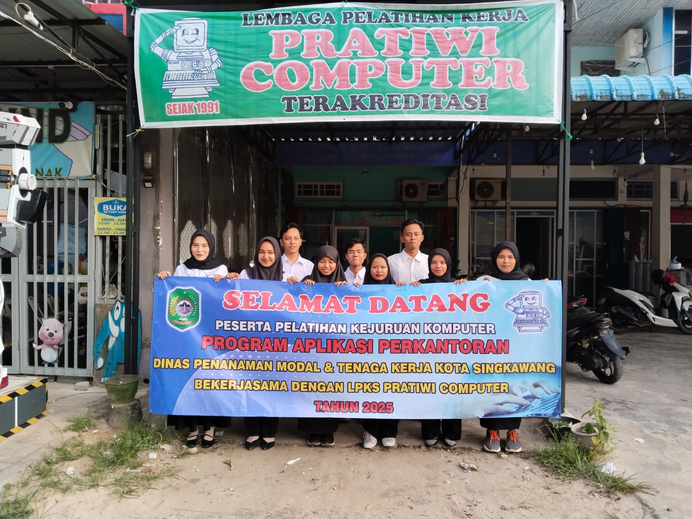
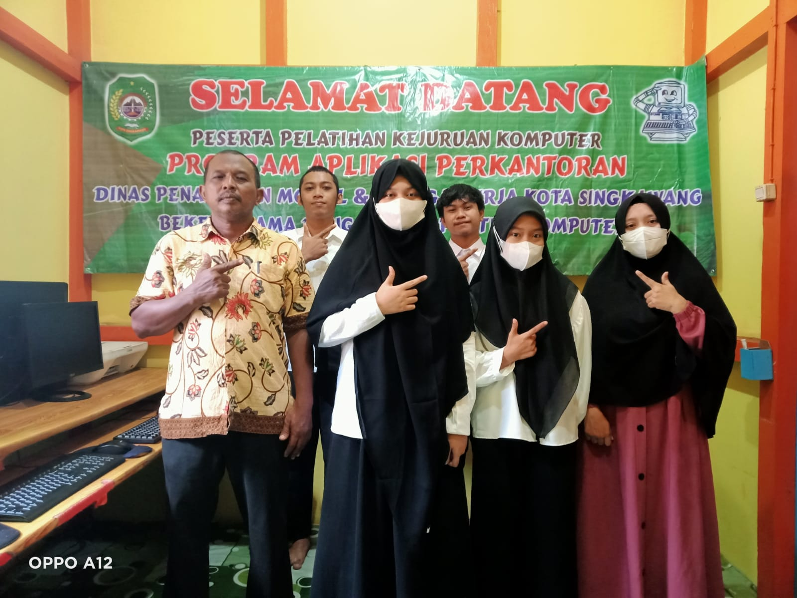

Intip keseruan belajar dan suasana kelas di LKP Pratiwi Komputer.

Suasana belajar mandiri terbimbing bersama instruktur.

Tips komputer gratis dan info kelas di Instagram.

Suasana Magang terbimbing di Lapangan Kerja.

Apresiasi kelulusan program kelas siswa LKP.

Penyusunan CV profesional dan pemagangan.

Praktik membuat surat, tabel, presentasi.

Pendalaman rumus Excel penunjang administrasi.

Evaluasi akhir materi untuk menguji kesiapan kerja.